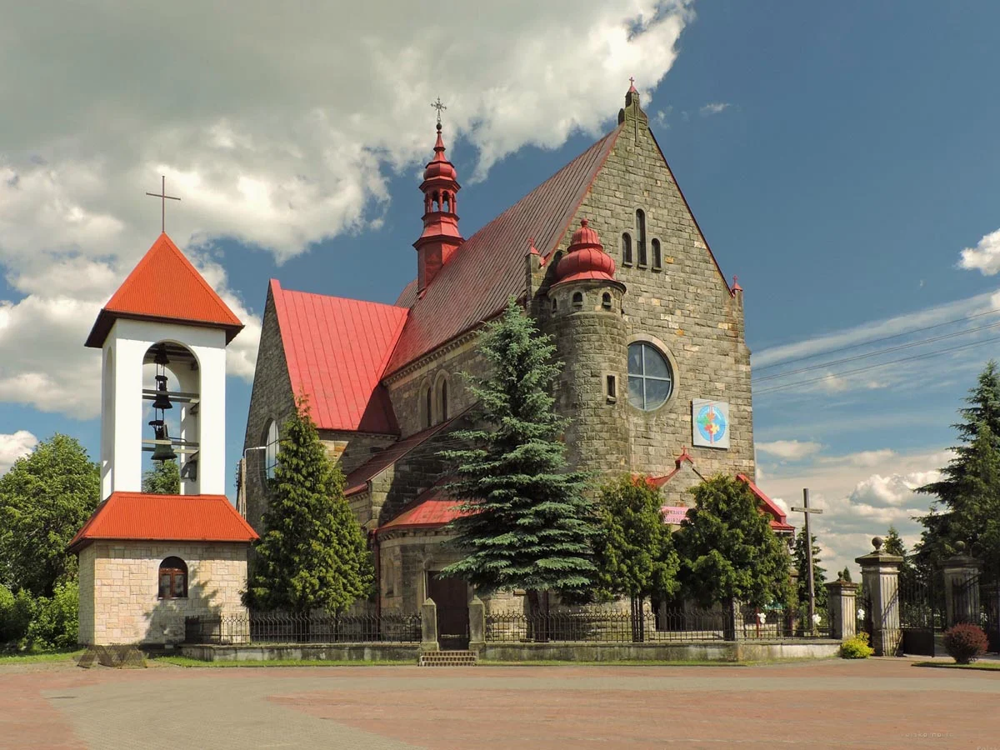

Parafia
św. Jana Chrzciciela
w Jastrzębiu
„Oto Baranek Boży,
który gładzi grzechy świata.”(J 1,29)
Aktualności
Bądź na bieżąco z życiem parafii
→Ogłoszenia
Sprawdź najnowsze ogłoszenia parafialne
→Intencje
Zamów intencję mszalną
→Najnowsze aktualności
Zobacz wszystkie →Wczytywanie aktualności…
Sakramenty
Chrzest
Przyjęcie do wspólnoty Kościoła.
Dowiedz się więcej →Komunia Święta
Pierwsze spotkanie z Jezusem.
Zobacz więcej →Bierzmowanie
Umocnienie Duchem Świętym.
Zobacz więcej →Małżeństwo
Sakrament miłości na całe życie.
Zobacz więcej →Namaszczenie chorych
Udzielenie Bożej łaski w chorobie i cierpieniu.
Dowiedz się więcej →Pogrzeb
Modlitwa i nadzieja na życie wieczne.
Dowiedz się więcej →Galeria zdjęć

Ogłoszenia parafialne
Wczytywanie ogłoszeń…
Intencje mszalne
| Data | Dzień | Godzina | Zamawiający | Intencja |
|---|---|---|---|---|
| Wczytywanie intencji… | ||||